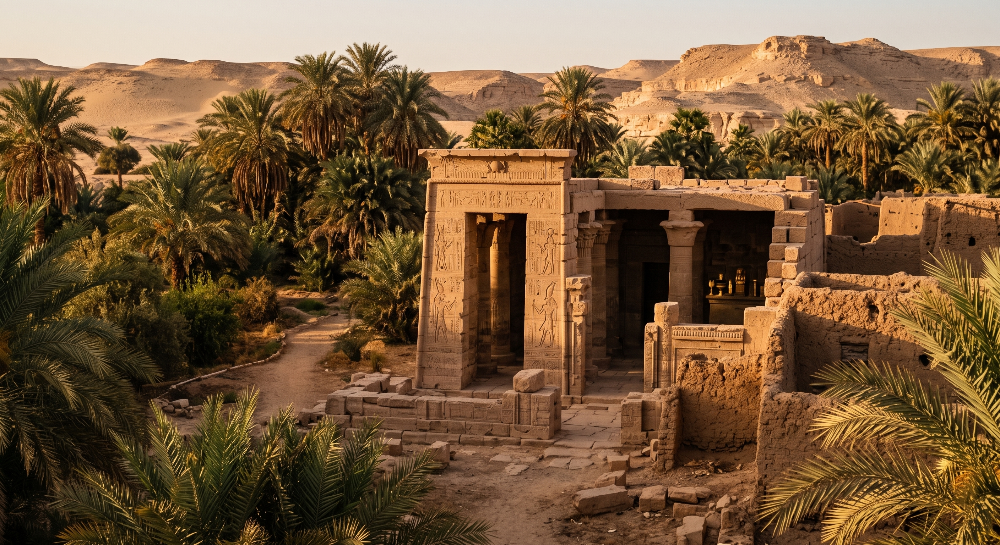
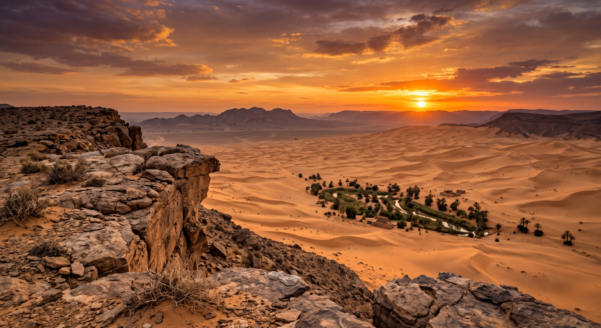
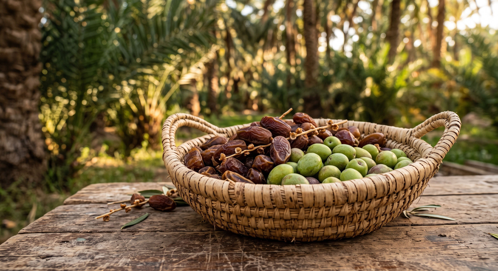
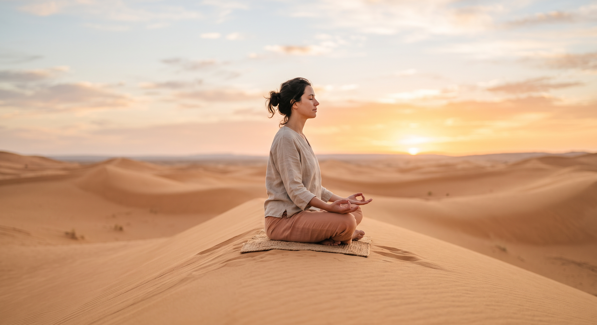

Beyond the dunes. Immerse yourself in the rich history, local culture, and profound tranquility of the oasis.

Step back in time. Explore the legendary Valley of the Golden Mummies, the Temple of Alexander the Great, and the vibrantly painted Tombs of the Nobles.

Hike up the historical English Mountain just in time for a breathtaking desert sunset. Enjoy panoramic views of the entire oasis bathed in golden light.

Connect with the land. Join local farmers in harvesting dates and olives, taste fresh organic produce, and learn traditional Bedouin crafts.

Find your inner peace in the profound silence of the desert. We offer sunrise yoga sessions on the dunes and guided meditations featuring traditional sound healing.